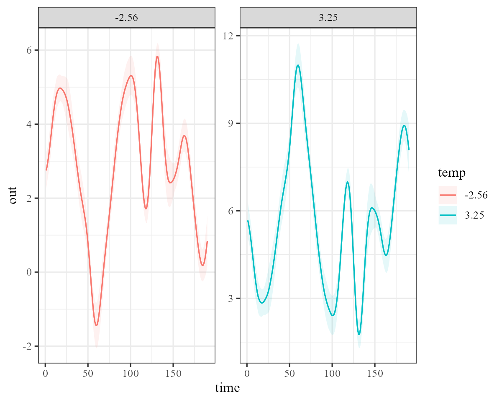
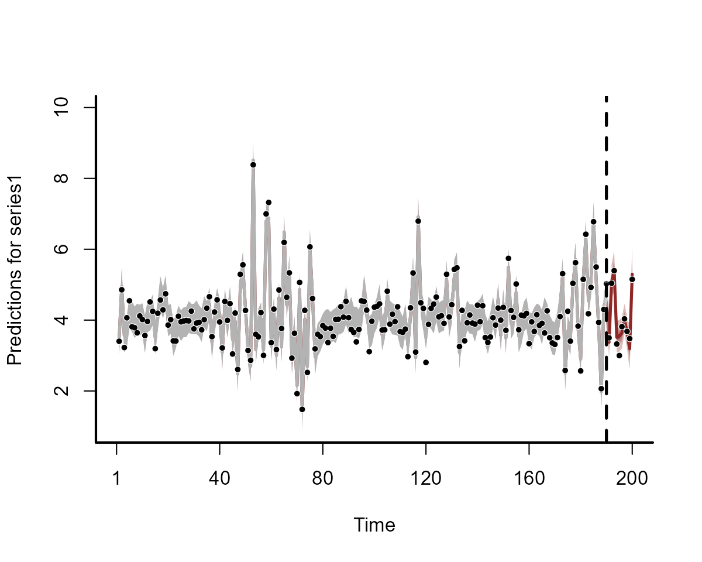
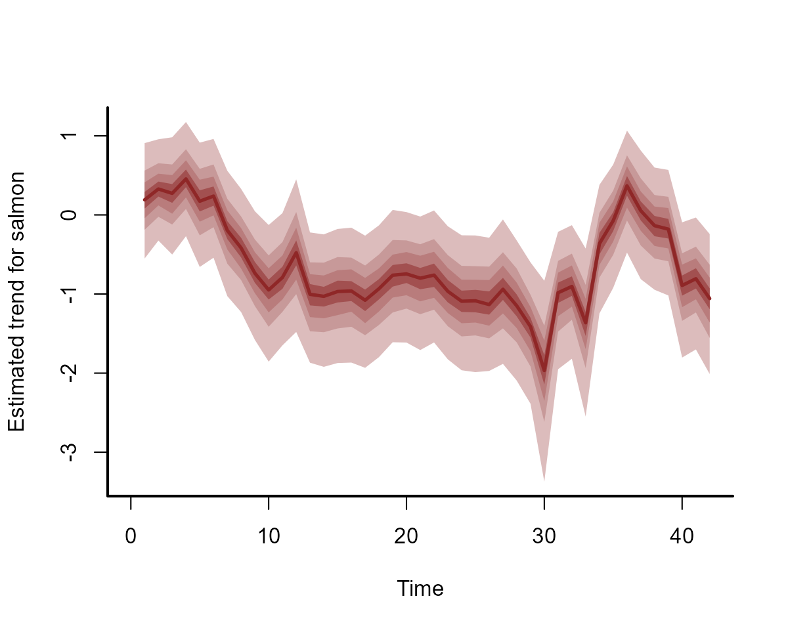

Time-varying effects in mvgam
Nicholas J Clark
2023-10-20
Source:vignettes/time_varying_effects.Rmd
time_varying_effects.RmdThe purpose of this vignette is to show how the mvgam
package can be used to estimate and forecast regression coefficients
that vary through time.
Time-varying effects
Dynamic fixed-effect coefficients (often referred to as dynamic
linear models) can be readily incorporated into GAMs / DGAMs. In
mvgam, the dynamic() formula wrapper offers a
convenient interface to set these up. The plan is to incorporate a range
of dynamic options (such as random walk, AR1 etc…) but for the moment
only low-rank Gaussian Process (GP) smooths are allowed (making use
either of the gp basis in mgcv of of Hilbert
space approximate GPs). These are advantageous over splines or random
walk effects for several reasons. First, GPs will force the time-varying
effect to be smooth. This often makes sense in reality, where we would
not expect a regression coefficient to change rapidly from one time
point to the next. Second, GPs provide information on the ‘global’
dynamics of a time-varying effect through their length-scale parameters.
This means we can use them to provide accurate forecasts of how an
effect is expected to change in the future, something that we couldn’t
do well if we used splines to estimate the effect. An example below
illustrates.
Simulating time-varying effects
Simulate a time-varying coefficient using a squared exponential
Gaussian Process function with length scale \(\rho\)=10. We will do this using an
internal function from mvgam (the sim_gp
function):
set.seed(1111)
N <- 200
beta_temp <- mvgam:::sim_gp(rnorm(1),
alpha_gp = 0.75,
rho_gp = 10,
h = N) + 0.5A plot of the time-varying coefficient shows that it changes smoothly through time:
plot(beta_temp, type = 'l', lwd = 3,
bty = 'l', xlab = 'Time', ylab = 'Coefficient',
col = 'darkred')
box(bty = 'l', lwd = 2)
Next we need to simulate the values of the covariate, which we will
call temp (to represent \(temperature\)). In this case we just use a
standard normal distribution to simulate this covariate:
temp <- rnorm(N, sd = 1)Finally, simulate the outcome variable, which is a Gaussian observation process (with observation error) over the time-varying effect of \(temperature\)
out <- rnorm(N, mean = 4 + beta_temp * temp,
sd = 0.25)
time <- seq_along(temp)
plot(out, type = 'l', lwd = 3,
bty = 'l', xlab = 'Time', ylab = 'Outcome',
col = 'darkred')
box(bty = 'l', lwd = 2)
Gather the data into a data.frame for fitting models,
and split the data into training and testing folds.
data <- data.frame(out, temp, time)
data_train <- data[1:190,]
data_test <- data[191:200,]Plot the series
plot_mvgam_series(data = data_train, newdata = data_test, y = 'out')
The dynamic() function
Time-varying coefficients can be fairly easily set up using the
s() or gp() wrapper functions in
mvgam formulae by fitting a nonlinear effect of
time and using the covariate of interest as the numeric
by variable (see ?mgcv::s or
?brms::gp for more details). The dynamic()
formula wrapper offers a way to automate this process, and will
eventually allow for a broader variety of time-varying effects (such as
random walk or AR processes). Depending on the arguments that are
specified to dynamic, it will either set up a low-rank GP
smooth function using s() with bs = 'gp' and a
fixed value of the length scale parameter \(\rho\), or it will set up a Hilbert space
approximate GP using the gp() function with
c=5/4 so that \(\rho\) is
estimated (see ?dynamic for more details). In this first
example we will use the s() option, and will mis-specify
the \(\rho\) parameter here as, in
practice, it is never known. This call to dynamic() will
set up the following smooth:
s(time, by = temp, bs = "gp", m = c(-2, 8, 2), k = 20)
mod <- mvgam(out ~ dynamic(temp, rho = 8, stationary = TRUE, k = 40),
family = gaussian(),
data = data_train)Inspect the model summary, which shows how the dynamic()
wrapper was used to construct a low-rank Gaussian Process smooth
function:
summary(mod, include_betas = FALSE)## GAM formula:
## out ~ s(time, by = temp, bs = "gp", m = c(-2, 8, 2), k = 40)
##
## Family:
## gaussian
##
## Link function:
## identity
##
## Trend model:
## None
##
## N series:
## 1
##
## N timepoints:
## 190
##
## Status:
## Fitted using Stan
##
## Observation error parameter estimates:
## 2.5% 50% 97.5% Rhat n.eff
## sigma_obs[1] 0.23 0.25 0.28 1 1843
##
## GAM coefficient (beta) estimates:
## 2.5% 50% 97.5% Rhat n.eff
## (Intercept) 4 4 4.1 1 2045
##
## Approximate significance of GAM observation smooths:
## edf F p-value
## s(time):temp 16.7 55.3 <2e-16 ***
## ---
## Signif. codes: 0 '***' 0.001 '**' 0.01 '*' 0.05 '.' 0.1 ' ' 1
##
## Stan MCMC diagnostics:
## n_eff / iter looks reasonable for all parameters
## Rhat looks reasonable for all parameters
## 0 of 2000 iterations ended with a divergence (0%)
## 0 of 2000 iterations saturated the maximum tree depth of 12 (0%)
## E-FMI indicated no pathological behaviorBecause this model used a spline with a gp basis, it’s
smooths can be visualised just like any other gam. Plot the
estimated time-varying coefficient for the in-sample training period
plot(mod, type = 'smooths')
We can also plot the estimates for the in-sample and out-of-sample
periods to see how the Gaussian Process function produces sensible
smooth forecasts. Here we supply the full dataset to the
newdata argument in plot_mvgam_smooth to
inspect posterior forecasts of the time-varying smooth function. Overlay
the true simulated function to see that the model has adequately
estimated it’s dynamics in both the training and testing data
partitions
plot_mvgam_smooth(mod, smooth = 1, newdata = data)
abline(v = 190, lty = 'dashed', lwd = 2)
lines(beta_temp, lwd = 2.5, col = 'white')
lines(beta_temp, lwd = 2)
We can also use plot_predictions from the
marginaleffects package to visualise the time-varying
coefficient for what the effect would be estimated to be at different
values of \(temperature\):
plot_predictions(mod,
newdata = datagrid(time = unique,
temp = fivenum),
by = c('time', 'temp', 'temp'),
type = 'link')
This results in sensible forecasts of the observations as well
plot(mod, type = 'forecast', newdata = data_test)
## Out of sample CRPS:
## [1] 1.311023The syntax is very similar if we wish to estimate the parameters of
the underlying Gaussian Process, this time using a Hilbert space
approximation. We simply omit the rho argument in
dynamic to make this happen. This will set up a call
similar to gp(time, by = 'temp', c = 5/4), k = 20).
This model summary now contains estimates for the marginal deviation and length scale parameters of the underlying Gaussian Process function:
summary(mod, include_betas = FALSE)## GAM formula:
## out ~ gp(time, by = temp, c = 5/4, k = 40, scale = TRUE)
##
## Family:
## gaussian
##
## Link function:
## identity
##
## Trend model:
## None
##
## N series:
## 1
##
## N timepoints:
## 190
##
## Status:
## Fitted using Stan
##
## Observation error parameter estimates:
## 2.5% 50% 97.5% Rhat n.eff
## sigma_obs[1] 0.24 0.26 0.29 1 2185
##
## GAM coefficient (beta) estimates:
## 2.5% 50% 97.5% Rhat n.eff
## (Intercept) 4 4 4.1 1 3948
##
## GAM gp term marginal deviation (alpha) and length scale (rho) estimates:
## 2.5% 50% 97.5% Rhat n.eff
## alpha_gp(time):temp 0.630 0.890 1.400 1 657
## rho_gp(time):temp 0.029 0.053 0.069 1 828
##
## Stan MCMC diagnostics:
## n_eff / iter looks reasonable for all parameters
## Rhat looks reasonable for all parameters
## 0 of 2000 iterations ended with a divergence (0%)
## 0 of 2000 iterations saturated the maximum tree depth of 12 (0%)
## E-FMI indicated no pathological behaviorEffects for gp() terms can also be plotted as
smooths:
plot_mvgam_smooth(mod, smooth = 1, newdata = data)
abline(v = 190, lty = 'dashed', lwd = 2)
lines(beta_temp, lwd = 2.5, col = 'white')
lines(beta_temp, lwd = 2)
Both the above plot and the below plot_predictions()
call show that the effect in this case is similar to what we estimated
in the approximate GP smooth model above:
plot_predictions(mod,
newdata = datagrid(time = unique,
temp = fivenum),
by = c('time', 'temp', 'temp'),
type = 'link')
Forecasts are also similar:
plot(mod, type = 'forecast', newdata = data_test)
## Out of sample CRPS:
## [1] 1.654291Salmon survival example
Here we will use openly available data on marine survival of Chinook
salmon to illustrate how time-varying effects can be used to improve
ecological time series models. Scheuerell and Williams
(2005) used a dynamic linear model to examine the relationship
between marine survival of Chinook salmon and an index of ocean
upwelling strength along the west coast of the USA. The authors
hypothesized that stronger upwelling in April should create better
growing conditions for phytoplankton, which would then translate into
more zooplankton and provide better foraging opportunities for juvenile
salmon entering the ocean. Thus, for smolts entering the ocean. The data
on survival is measured as a proportional variable over 42 years
(1964–2005) and is available in the MARSS package:
load(url('https://github.com/atsa-es/MARSS/raw/master/data/SalmonSurvCUI.rda'))
dplyr::glimpse(SalmonSurvCUI)## Rows: 42
## Columns: 3
## $ year <int> 1964, 1965, 1966, 1967, 1968, 1969, 1970, 1971, 1972, 1973, 19…
## $ logit.s <dbl> -3.46, -3.32, -3.58, -3.03, -3.61, -3.35, -3.93, -4.19, -4.82,…
## $ CUI.apr <int> 57, 5, 43, 11, 47, -21, 25, -2, -1, 43, 2, 35, 0, 1, -1, 6, -7…First we need to prepare the data for modelling. The variable
CUI.apr will be standardized to make it easier for the
sampler to estimate underlying GP parameters for the time-varying
effect. We also need to convert the survival back to a proportion, as in
its current form it has been logit-transformed (this is because most
time series packages cannot handle proportional data). As usual, we also
need to create a time indicator and a series
indicator for working in mvgam:
SalmonSurvCUI %>%
# create a time variable
dplyr::mutate(time = dplyr::row_number()) %>%
# create a series variable
dplyr::mutate(series = as.factor('salmon')) %>%
# z-score the covariate CUI.apr
dplyr::mutate(CUI.apr = as.vector(scale(CUI.apr))) %>%
# convert logit-transformed survival back to proportional
dplyr::mutate(survival = plogis(logit.s)) -> model_dataInspect the data
dplyr::glimpse(model_data)## Rows: 42
## Columns: 6
## $ year <int> 1964, 1965, 1966, 1967, 1968, 1969, 1970, 1971, 1972, 1973, 1…
## $ logit.s <dbl> -3.46, -3.32, -3.58, -3.03, -3.61, -3.35, -3.93, -4.19, -4.82…
## $ CUI.apr <dbl> 2.37949804, 0.03330223, 1.74782994, 0.30401713, 1.92830654, -…
## $ time <int> 1, 2, 3, 4, 5, 6, 7, 8, 9, 10, 11, 12, 13, 14, 15, 16, 17, 18…
## $ series <fct> salmon, salmon, salmon, salmon, salmon, salmon, salmon, salmo…
## $ survival <dbl> 0.030472033, 0.034891409, 0.027119717, 0.046088827, 0.0263393…Plot features of the outcome variable, which shows that it is a proportional variable with particular restrictions that we want to model:
plot_mvgam_series(data = model_data, y = 'survival')
A State-Space Beta regression
mvgam can easily handle data that are bounded at 0 and 1
with a Beta observation model (using the mgcv function
betar(), see ?mgcv::betar for details). First
we will fit a simple State-Space model that uses a Random Walk dynamic
process model with no predictors and a Beta observation model:
The summary of this model shows good behaviour of the Hamiltonian Monte Carlo sampler and provides useful summaries on the Beta observation model parameters:
summary(mod0)## GAM formula:
## survival ~ 1
##
## Family:
## beta
##
## Link function:
## logit
##
## Trend model:
## RW
##
## N series:
## 1
##
## N timepoints:
## 42
##
## Status:
## Fitted using Stan
##
## Observation precision parameter estimates:
## 2.5% 50% 97.5% Rhat n.eff
## phi[1] 160 300 560 1.01 500
##
## GAM coefficient (beta) estimates:
## 2.5% 50% 97.5% Rhat n.eff
## (Intercept) -4.3 -3.3 -2.5 1.1 59
##
## Latent trend variance estimates:
## 2.5% 50% 97.5% Rhat n.eff
## sigma[1] 0.17 0.33 0.55 1.02 200
##
## Stan MCMC diagnostics:
## n_eff / iter looks reasonable for all parameters
## Rhats above 1.05 found for 43 parameters
## *Diagnose further to investigate why the chains have not mixed
## 0 of 2000 iterations ended with a divergence (0%)
## 0 of 2000 iterations saturated the maximum tree depth of 12 (0%)
## E-FMI indicated no pathological behaviorA plot of the underlying dynamic component shows how it has easily handled the temporal evolution of the time series:
plot(mod0, type = 'trend')
Posterior hindcasts are also good and will automatically respect the bounding at 0 and 1:
plot(mod0, type = 'forecast')
Including time-varying upwelling effects
Now we can increase the complexity of our model by constructing and
fitting a State-Space model with a time-varying effect of the coastal
upwelling index in addition to the autoregressive dynamics. We again use
a Beta observation model to capture the restrictions of our proportional
observations, but this time will include a dynamic() effect
of CUI.apr in the latent process model. We do not specify
the \(\rho\) parameter, instead opting
to estimate it using a Hilbert space approximate GP:
mod1 <- mvgam(formula = survival ~ 1,
trend_formula = ~ dynamic(CUI.apr, k = 25),
trend_model = 'RW',
family = betar(),
data = model_data)The summary for this model now includes estimates for the time-varying GP parameters:
summary(mod1, include_betas = FALSE)## GAM observation formula:
## survival ~ 1
##
## GAM process formula:
## ~dynamic(CUI.apr, k = 25)
##
## Family:
## beta
##
## Link function:
## logit
##
## Trend model:
## RW
##
## N process models:
## 1
##
## N series:
## 1
##
## N timepoints:
## 42
##
## Status:
## Fitted using Stan
##
## Observation precision parameter estimates:
## 2.5% 50% 97.5% Rhat n.eff
## phi[1] 190 360 660 1 1160
##
## GAM observation model coefficient (beta) estimates:
## 2.5% 50% 97.5% Rhat n.eff
## (Intercept) -4.2 -3.3 -2.5 1.01 79
##
## Process error parameter estimates:
## 2.5% 50% 97.5% Rhat n.eff
## sigma[1] 0.18 0.31 0.5 1.01 241
##
## GAM process model coefficient (beta) estimates:
## 2.5% 50% 97.5% Rhat n.eff
## gp(time):CUI.apr.1_trend -0.092 0.11 0.49 1.01 950
##
## GAM process model gp term marginal deviation (alpha) and length scale (rho) estimates:
## 2.5% 50% 97.5% Rhat n.eff
## alpha_gp_time_byCUI_apr_trend 0.031 0.31 0.91 1.00 514
## rho_gp_time_byCUI_apr_trend 0.034 0.13 0.76 1.01 570
##
## Stan MCMC diagnostics:
## n_eff / iter looks reasonable for all parameters
## Rhat looks reasonable for all parameters
## 104 of 2000 iterations ended with a divergence (5.2%)
## *Try running with larger adapt_delta to remove the divergences
## 0 of 2000 iterations saturated the maximum tree depth of 12 (0%)
## E-FMI indicated no pathological behaviorThe estimates for the underlying dynamic process haven’t changed much:
plot(mod1, type = 'trend')
But the process error parameter \(\sigma\) is slightly smaller for this model than for the first model:
# Extract estimates of the process error 'sigma' for each model
mod0_sigma <- as.data.frame(mod0, variable = 'sigma', regex = TRUE) %>%
dplyr::mutate(model = 'Mod0')
mod1_sigma <- as.data.frame(mod1, variable = 'sigma', regex = TRUE) %>%
dplyr::mutate(model = 'Mod1')
sigmas <- rbind(mod0_sigma, mod1_sigma)
# Plot using ggplot2
library(ggplot2)
ggplot(sigmas, aes(y = `sigma[1]`, fill = model)) +
geom_density(alpha = 0.3, colour = NA) +
coord_flip()
Why does the process error not need to be as flexible in the second
model? Because the estimates of this dynamic process are now informed
partly by the time-varying effect of upwelling, which we can visualise
on the link scale using plot() with
trend_effects = TRUE:
plot(mod1, type = 'smooth', trend_effects = TRUE)
Or on the outcome scale, at a range of possible CUI.apr
values, using plot_predictions():
plot_predictions(mod1, newdata = datagrid(CUI.apr = fivenum,
time = unique),
by = c('time', 'CUI.apr', 'CUI.apr'),
process_error = FALSE)## Warning: These arguments are not supported for models of class `mvgam`:
## process_error. Please file a request on Github if you believe that additional
## arguments should be supported:
## https://github.com/vincentarelbundock/marginaleffects/issues
Comparing model predictive performances
A key question when fitting multiple time series models is whether
one of them provides better predictions than the other. There are
several options in mvgam for exploring this quantitatively.
First, we can compare models based on in-sample approximate
leave-one-out cross-validation as implemented in the popular
loo package:
loo_compare(mod0, mod1)## Warning: Some Pareto k diagnostic values are too high. See help('pareto-k-diagnostic') for details.
## Warning: Some Pareto k diagnostic values are too high. See help('pareto-k-diagnostic') for details.## elpd_diff se_diff
## mod1 0.0 0.0
## mod0 -2.7 1.4The second model has the larger Expected Log Predictive Density
(ELPD), meaning that it is slightly favoured over the simpler model that
did not include the time-varying upwelling effect. However, the two
models certainly do not differ by much. But this metric only compares
in-sample performance, and we are hoping to use our models to produce
reasonable forecasts. Luckily, mvgam also has routines for
comparing models using approximate leave-future-out cross-validation.
Here we refit both models to a reduced training set (starting at time
point 30) and produce approximate 1-step ahead forecasts. These
forecasts are used to estimate forecast ELPD before expanding the
training set one time point at a time. We use Pareto-smoothed importance
sampling to reweight posterior predictions, acting as a kind of particle
filter so that we don’t need to refit the model too often (you can read
more about how this process works in Bürkner et al. 2020).
The model with the time-varying upwelling effect tends to provides better 1-step ahead forecasts, with a higher total forecast ELPD
sum(lfo_mod0$elpds)## [1] 34.67117
sum(lfo_mod1$elpds)## [1] 36.26008We can also plot the ELPDs for each model as a contrast. Here, values less than zero suggest the time-varying predictor model (Mod1) gives better 1-step ahead forecasts:
plot(x = 1:length(lfo_mod0$elpds) + 30,
y = lfo_mod0$elpds - lfo_mod1$elpds,
ylab = 'ELPDmod0 - ELPDmod1',
xlab = 'Evaluation time point',
pch = 16,
col = 'darkred',
bty = 'l')
abline(h = 0, lty = 'dashed')
A useful exercise to further expand this model would be to think
about what kinds of predictors might impact measurement error, which
could easily be implemented into the observation formula in
mvgam. But for now, we will leave the model as-is.
Further reading
The following papers and resources offer a lot of useful material about dynamic linear models and how they can be applied / evaluated in practice:
Bürkner, PC, Gabry, J and Vehtari, A Approximate leave-future-out cross-validation for Bayesian time series models. Journal of Statistical Computation and Simulation. 90:14 (2020) 2499-2523.
Herrero, Asier, et al. From the individual to the landscape and back: time‐varying effects of climate and herbivory on tree sapling growth at distribution limits. Journal of Ecology 104.2 (2016): 430-442.
Holmes, Elizabeth E., Eric J. Ward, and Wills Kellie. “MARSS: multivariate autoregressive state-space models for analyzing time-series data.” R Journal. 4.1 (2012): 11.
Scheuerell, Mark D., and John G. Williams. Forecasting climate induced changes in the survival of Snake River Spring/Summer Chinook Salmon (Oncorhynchus Tshawytscha) Fisheries Oceanography 14 (2005): 448–57.